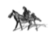

Cellat ve Ağlayan Yüz
[Kara Kitap’tan. Romanın kahramanlarından
köşe yazarı Celâl Salik anlatıyor.]
Gözyaşları içindeki bir erkek niye telâşlandırır bizi? Ağlayan bir kadını, günlük hayatımızın sıradışı, ama duygulu ve acıklı bir parçası olarak görebilir, içtenlik ve sevgiyle benimseriz onu. Ağlayan bir erkek ise bir çaresizlik duygusuyla doldurur içimizi. Ya dünyanın sonuna gelir gibi yapılabilecek şeylerin sonuna gelmiştir bu adam – mesela bir sevdiğinin ölümünde olduğu gibi. Ya da dünyasında bizimkiyle uyuşmayan bir yan vardır; huzursuz edici, hatta dehşet verici bir yan. Yüz ya da surat dediğimiz ve tanıdığımızı sandığımız haritada hiç tanımadığımız bir ülkeye rastgelmenin şaşkınlığını ve dehşetini hepimiz biliriz. Bu konuda, Naima’nın Tarih’inin VI. cildinde ve Mehmet Halife’nin Tarihi Gılmani’sinde anlatılan bir hikâyeye, Edirneli Kadri’nin Cellatlar Tarihi’nde de rastgeldim. Aşağıdaki gerçek hikâye en çok Cellatlar Tarihi’nde anlatılanlara yakındır. (Ayrıca bu eski el yazmasının yeni yazıya çevrilip teknik açıdan son derece eğitici resimleriyle yayımlanmasını Milli Eğitim Bakanlığımızdan bekliyoruz.)
Çok değil, üç yüzyıl önce bir bahar gecesi, dönemin en namlı celladı Kara Ömer, atıyla Erzurum Kalesi’ne yaklaşıyordu. On iki gün önce padişah kararı ve Bostancıbaşı’nın görevlendirmesiyle eline tutuşturulan bir fermanla Erzurum Kalesi’ne hükmeden Abdi Paşa’yı idam etmeye yollanmıştı. O mevsimde sıradan bir yolcunun bir ayda alacağı İstanbul-Erzurum yolunu on iki günde aldığı için memnundu; bahar gecesinin serinliği içinde yorgunluğunu unutmuştu, ama gene de görev öncesi hissetmediği bir durgunluk vardı üzerinde: Sanki işini hakkıyla ve yüzakıyla yapmasını engelleyecek bir lanetin gölgesini ya da bir kararsızlığın kuşkusunu hissediyordu.
İşi zordu zor olmasına: Hiç tanımadığı ve görmediği bir Paşa’nın adamlarıyla dolu konağına tek başına girecek, fermanı verecek, kendi sarsılmaz varlığı ve güveniyle Abdi Paşa’ya ve çevresine Padişah’ın kararına karşı çıkmanın boşluğunu hissettirecek, küçük bir ihtimal ama, Paşa bu boşluğu hissetmekte gecikirse, hiç vakit geçirmeden ve çevresindekiler suça niyet etmeden onu hemen öldürecekti. Bu işte öylesine deneyimliydi ki, hissettiği kararsızlık bu yüzden olamazdı hiç: Otuz yıllık meslek hayatında yirmiye yakın şehzade, iki sadrazam, altı vezir, yirmi üç paşa, hırlı hırsız, suçlu suçsuz, kadın, erkek, çocuk, ihtiyar, Hıristiyan, Müslüman altı yüzün üzerinde kişiyi idam etmiş, çıraklığından başlayarak bugüne kadar binlerce kişiyi işkenceden geçirmişti.
Bahar sabahı, cellat şehre girmeden önce bir su kıyısında atından indi ve kuşların neşeli cıvıltıları arasında abdest aldı, namaz kıldı. İşlerinin yolunda gitmesini Allah’tan dilemek, dua etmek pek seyrek yaptığı bir işti. Ama her seferinde olduğu gibi Tanrı bu çalışkan kulunun duasını kabul etti.
Böylece her şey yolunda gitti. Kuşağında yağlı kemendiyle ve usturayla kazılı kafasında kızıl keçeden külahıyla celladı görür görmez tanıyan Abdi Paşa, başına gelecekleri hemen anladı, ama kuraldışı denebilecek hiçbir zorluk çıkarmadı. Belki de suçunu bildiği için kaderine kendini çoktan hazırlamıştı.
Önce, fermanı, en azından on kere ve her seferinde aynı dikkatle okudu. (Kurallara bağlı olan devlet adamları ve paşalarda görülen bir özellik.) Okuduğu fermanı gösterişli bir edayla öpüp başına koydu. (Hâlâ çevresinde etki bırakmayı düşünebilenlerde görülen ve Kara Ömer’in budalaca bulduğu bir tepki.) Kuran okumak, namaz kılmak istediğini söyledi. (Vakit kazanmak isteyenlerde ve gerçekten inananlarda görülen bir istek.) Namazını kıldıktan sonra, üzerindeki kıymetli taşları, takıları, yüzükleri celladına kalmasın diye, “Beni hatırlarsınız,” diyerek çevresindeki adamlarına dağıttı. (Dünyaya sıkı sıkı bağlı olanlar ve celladına kin duyabilecek kadar yüzeysel olanlarda görülen bir tepki.) Ve bu tepkilerin bir ya da birkaçını değil, ama hepsini gösterenlerin çoğu gibi, boynuna kement geçirilmeden önce, küfürler ederek boğuşmaya da kalktı. Ama çenesinin kenarına sıkı bir yumruk yedikten sonra çöktü ve ölümü beklemeye başladı. Ağlıyordu.
Ağlamak da böyle durumlarda kurbanların gösterdiği sıradan tepkilerden biriydi, ama Abdi Paşa’nın ağlayan yüzünde öyle bir şey gördü ki cellat, otuz yıllık meslek hayatında ilk defa bir kararsızlık geçirdi. Böylece, hiç yapmadığı bir şeyi yaptı: Boğmadan önce kurbanının yüzüne bir kumaş örttü. Başka meslektaşlarında gördüğü zaman eleştirdiği bir davranıştı bu; çünkü işini duraksamadan ve kusursuz yapabilmek için bir celladın kurbanının gözlerine sonuna kadar bakabilmesi gerektiğine inanırdı.
Öldüğüne emin olduktan sonra, hiç vakit kaybetmeden ölünün başını gövdesinden ‘şifre’ denilen özel usturayla ayırdı ve yanında getirdiği içi balla dolu kıldan bir torbanın içine sıcağı sıcağına daldırdı. Görevini başarıyla yaptığını Padişah’a kanıtlayabilmesi için, İstanbul’da onu teşhis edeceklere kurbanının kellesini hiç bozulmadan götürmeliydi. Çünkü idam edilmiş ünlü bir paşanın kesik başı sergilenip topluma gösterilmezse, yandaşları aslında paşanın sağ olduğunu iddia eder, yerine bir benzerini geçirip isyan edebilirlerdi.
Cellat, kesik başı içi balla dolu kıldan torbaya dikkatlice yerleştirirken, Paşa’nın yüzündeki o ağlayan bakışı, o anlaşılmaz ve dehşet verici ifadeyi bir daha, hayretle gördü ve ömrünün pek de uzak olmayan sonuna kadar hiç unutamadı.
Hemen atına binip şehirden çıktı. Kurbanının gövdesi gözyaşlarıyla ve iç bayıltacak kadar acıklı bir cenaze töreniyle gömülürken, cellat atının terkisindeki kelleyle, olay yerinden en azından iki günlük uzaklıkta olmayı isterdi hep. Böylece, bir buçuk gün süren sürekli bir yolculuktan sonra, Kemah Kalesi’ne vardı. Kervansarayda karnını doyurdu, torbasıyla hücresine çekildi ve uzun bir uykuya yattı.
Yarım gün süren deliksiz bir uykudan uyanırken, rüyasında çocukluğunun Edirne’sinde görüyordu kendini: Annesinin, kaynata kaynata yalnız bütün evi ve bahçeyi değil, bütün mahalleyi mayhoş bir incir kokusuyla kokutarak yaptığı incir reçeliyle dolu koskoca bir kavanoza yaklaştığı zaman, incir diye gördüğü o küçük yeşil yuvarlakların ağlayan bir kellenin gözleri olduğunu anlıyordu önce; sonra yasak bir şey yapmaktan çok ağlayan yüzdeki o anlaşılmaz dehşete tanık olmanın suçluluk duygusuyla kavanozun kapağını açıyor ve içinden ağlayan yetişkin bir erkeğin hıçkırıkları gelmeye başlayınca, elini kolunu bağlayan bir çaresizlikle donuyordu.
Ertesi gece, bir başka kervansarayda bir başka yataktaki uykusunun orta yerinde kendini ilkgençliğinin akşamüstlerinden birinde buldu: Hava kararmadan az önce, Edirne’nin içinde, ara sokakların birindeydi. Kim olduğunu çıkaramadığı bir arkadaşının uyarısı üzerine, göğün bir ucunda batan güneşi, öbür ucunda yükselen soluk dolunayın beyaz yüzünü görüyordu. Daha sonra, güneş battıkça ve hava karardıkça ayın yusyuvarlak yüzü aydınlanarak belirginleşiyor ve çok da geçmeden ışıl ışıl parlayan bu yüzün bir insan yüzü, ağlayan bir yüz olduğu anlaşılıyordu. Hayır, Edirne sokaklarını başka bir kentin huzursuzluk verici, anlaşılmaz sokaklarına dönüştüren şey, ayın yüzünün ağlayan bir yüze dönüşmesindeki acıklı yan değil, anlaşılmaz yandı.
Ertesi sabah cellat, uykusunun orta yerinde keşfettiği bu gerçeğin kendi anılarıyla uyuştuğunu düşündü. Meslek hayatı boyunca, binlerce erkeğin ağlayan yüzünü görmüştü, ama o yüzlerin hiçbiri bir acımasızlık, korku ya da suçluluk duygusuna sürüklememişti onu. Sanılanın tersine, kurbanları için üzülür kederlenirdi, ama bu duygu bir adalet, bir zorunluluk, bir geri dönülmezlik mantığıyla dengelenirdi hemen. Kafalarını kestiği, boğduğu, boyunlarını kırdığı kurbanlarının kendilerini ölüme götüren nedenler zinciri konusunda cellatlarından her zaman daha bilgili olduklarını bilirdi çünkü. Gözyaşlarıyla çırpınarak, sümükler içinde yalvararak, hıçkırarak, katılarak ölüme giden bir erkeğin görüntüsünde dayanılmayacak, katlanılamayacak hiçbir şey yoktu. İdamlıklardan tarihe, efsanelere geçecek gösterişli tavırlar, cesur sözler bekleyen bazı budalalar gibi, cellat ne küçümserdi ağlayan erkekleri, ne de hayatın rastlantısal ve geri dönülmez acımasızlığını hiç mi hiç anlayamamış başka çeşit budalaların yaptıkları gibi, elini kolunu bağlayan bir acıma duygusuna kapılırdı onlar karşısında.
Rüyalarında elini kolunu bağlayan şey neydi peki? Güneşli ve pırıl pırıl bir sabah, atının terkisinde kıldan torba, kayalarla kaplı derin uçurumlar arasından geçerken, cellat, elini kolunu bağlayan tutukluğun Erzurum’a girmeden önce içinde duyduğu kararsızlıkla ilgili olduğunu düşündü. Ruhunda, gölgesini hissettiği belli belirsiz bir lanet duygusu vardı ve gittikçe artıyordu. Boğmadan önce bir aba parçasını kurbanının yüzüne örtmeye kendini zorlayan bir esrarı görmüştü Abdi Paşa’nın unutulması gereken yüzünde. Uzun gün boyunca cellat, şaşırtıcı biçimleri olan sarp kayalıklar (tencere gövdeli bir yelkenli, başı yerine bir incir yerleşmiş bir aslan), her zamankinden daha yabancı ve daha şaşırtıcı çam ve kayın ağaçları ve buz gibi derelerin kıyılarındaki tuhaf, ne tuhaf, çakıltaşları arasından atını sürerken, terkisinde taşıdığı yüzün ifadesini bir daha hiç düşünmedi. Daha şaşırtıcı olan dünyaydı artık; yeniden keşfettiği, ilk defa fark ettiği yeni bir dünya.
Bütün ağaçların uykusuz gecelerde hatıralarının arasında kıpırdanan karanlık gölgelere benzediğini yeni fark ediyordu. Yeşeren yamaçlarda koyun sürülerini otlatan günahsız çobanların omuzlarının üstünde başlarını bir başkasının eşyasını taşır gibi taşıdıklarını ilk defa seziyordu. Dağ eteklerinde kurulmuş on evlik küçük köylerin, cami kapılarında sıra sıra dizilen boş ayakkabıları hatırlattığını ilk defa anlıyordu. Yarım gün sonra aralarından geçeceği batıdaki mor dağların ve onların tam üstündeki, minyatürlerden çıkma bulutların, dünyanın çıplak, çırılçıplak bir yer olduğuna işaret ettiğini yeni görüyordu. Bütün bitkilerin, nesnelerin, ürkek hayvanların hatıralar kadar eski, çaresizlik kadar yalın ve kâbuslar kadar korkutucu bir âlemin işaretleri olduğunu şimdi kavrıyordu. Batıya doğru ilerledikçe ve uzayan gölgeler anlam değiştirdikçe, cellat, çatlayan bir çömlekten sızan kan gibi, çevresine esrarını çözemediği işaretlerin, belirtilerin sızdığını hissetti.
Karanlık çökerken girdiği kervansarayda karnını doyurdu, ama torbayla bir hücreye kapanıp uyuyamayacağını anladı. Uykusunun orta yerinde, patlayan bir yaradan akacak irin gibi, ağır ağır yayılacak korkulu rüyaya; bu rüyada her gece bir başka anının kıyafetlerine bürünerek ağlayacak o çaresiz yüze katlanamayacağını biliyordu. Kervansaray kalabalığı içindeki insan yüzlerine hayretle bakarak bir süre dinlendi ve yoluna devam etti.
Gece soğuk ve sessizdi; rüzgâr yoktu, tek dal kıpırdamıyordu ve yorgun atı da kendi yolunu kendi buluyordu. Uzun bir süre hiçbir şey görmeden ve eski mutlu günlerinde olduğu gibi, kafasını tedirgin edici hiçbir soruyla kurcalamadan yoluna devam etti: Daha sonraları, karanlık yüzünden diye düşünecekti. Çünkü bulutlar arasından ay belirince ağaçlar, gölgeler, kayalar ağır ağır çözülmez bir esrarın işaretlerine dönüştüler. Korkutucu olan ne mezarlıklardaki acıklı taşlardı, ne yapayalnız serviler, ne de ıssız gecedeki kurt ulumaları. Dünyayı korkulacak kadar şaşırtıcı yapan şey, âlemin sanki bir hikâye anlatmaya kalkmasıydı. Dünya, cellada sanki bir şey söylemek istiyor, bir anlamı işaret ediyor, ama bir rüyadaki gibi bu söz dumanlı bir belirsizlik içinde kayboluyordu. Sabaha doğru cellat kulaklarının dibinde hıçkırık seslerini işitmeye başladı.
Gün ağarırken, hıçkırık seslerinin, yeni çıkan rüzgârın dallarda oynadığı bir oyun olduğunu düşündü; daha sonra, yorgunluk ve uykusuzluğun sonucu olduğuna hükmetti. Öğleye doğru terkisindeki torbadan gelen hıçkırık sesleri öyle belirginleşti ki, tıpkı, bir geceyarısı iyi kapanmamış bir pencerenin sinir bozucu gıcırtısını kesmek için sıcak yatağından çıkan biri gibi, atından indi, torbayı terkiye bağlayan ipleri gere gere iyice sıkıştırdı. Ama daha sonra, acımasızca yağan yağmurun altında yalnızca hıçkırıkları duymak değil, ağlayan yüzün gözyaşlarını da hissedecekti.
Güneş yeniden açtığında dünyanın esrarının ağlayan yüzün ifadesindeki bir sırla ilişkili olduğunu anladı. Sanki âlemin anlamı kaybolmuştu: Eskiden, o pek bildik ve tanıdık gelen anlaşılabilir dünyayı, yüzlerin üzerindeki sıradan bir anlam, sıradan bir ifade ayakta tutuyordu. Şimdi tıpkı tılsımlı bir kâsenin şangırdayarak kırılmasından, sihirli ve billur bir sürahinin çatlamasından sonra her şeyin alt üst olması gibi, ağlayan yüzün üzerinde o tuhaf ifadenin belirmesinden sonra, her şeyin anlamı, celladı korkulu bir yalnızlığa bırakarak kaybolmuştu. Üzerindeki ıslak elbiseleri güneşte kuruturken, her şeyin eski düzenine dönebilmesi için, torbadaki başın yüzünde bir maske gibi taşıdığı ifadeyi değiştirmesi gerektiğini anladı. Öte yandan, meslek ahlâkı, kestikten sonra sıcağı sıcağına bal dolu torbaya bastırdığı başı İstanbul’a hiç bozmadan, olduğu gibi getirmesini de ona buyuruyordu.
At üstünde uykusuz geçen ve torbadan gelen bitip tükenmeyen hıçkırıkların sinir bozucu bir müziğe dönüştüğü çıldırtıcı bir gecenin sabahında, cellat dünyayı o kadar değişmiş buldu ki, kendisinin kendisi olduğuna inanmakta zorluk çekti. Çınar ve çam ağaçları, çamurlu yollar, kendisini görenlerin dehşetle kaçıştıkları köy çeşmeleri, hiç tanımadığı, bilmediği bir dünyadan çıkmaydılar. Öğle vakti varlığını daha önce bilmediği bir kasabada hayvani bir içgüdüyle atıştırdığı yiyecekleri de tanımakta güçlük çekti. Kasaba dışında, atını dinlendirmek için bir ağacın altına uzandığında, bir zamanlar gökyüzü sandığı şeyin hiç bilmediği, hiç görmediği tuhaf ve mavi bir kubbe olduğunu anladı. Güneş batarken atına binip yoluna devam etti, ama daha altı günlük yol vardı önünde. Torbadaki hıçkırıkları dindirmezse, ağlayan yüzün ifadesini değiştirmezse, dünyasını o eski bildik dünyaya dönüştürecek o sihirli işlemi yapmazsa İstanbul’a hiç varamayacağını anlamıştı artık.
Hava karardıktan sonra, havlayan köpeklerini işittiği bir köyün kıyısında bir kuyuya rastlayınca, atından indi. Atının terkisinden kıl torbayı indirdi, ağzını çözdü ve saçlarından dikkatle tuttuğu kelleyi balın içinden çıkardı. Kuyudan çektiği kova kova sularla, yeni doğmuş bir bebeği yıkar gibi, kafayı özenle yıkadı. Bir kumaş parçasıyla saçlarının içinden kulaklarının deliklerine varıncaya kadar kuruladıktan sonra, dolunayın ışığında yüzüne baktı: Ağlıyordu; hiç bozulmamıştı; aynı dayanılmaz, unutulmaz çaresizlik ifadesi vardı üzerinde.
Kafayı kuyunun kenarına bıraktı, atının terkisinden meslek aletlerini, iki özel bıçağı, kenarları küt demir işkence çubuklarını alıp döndü. Önce, bıçaklarla ağzının kenarlarını, deriyi ve kemiği kanırtarak ağır ağır düzeltmeye girişti. Uzun bir çabadan sonra dudakları iyice parçalamış, ama ağzı belli belirsiz ve yılık da olsa gülümsetmeyi başarmıştı. Sonra, daha ince bir işe girişip acıyla kasılmış gözleri açmaya başladı. Çok uzun ve yorucu bir çabadan sonra gülümseyişi bütün yüze yayabildiğinde, yorulmuş gevşemişti artık. Gene de, boğmadan önce Abdi Paşa’nın çenesinin kenarına indirdiği yumruğun mor izini derinin üstünde görünce sevindi. Her şeyi yoluna koyabilmenin çocuksu sevinciyle koşarak aletlerini atının terkisine yerleştirdi.
Geri döndüğünde bıraktığı yerde baş yoktu. İlk anda, gülümseyen başın bir oyunu olarak gördü bunu. Kafanın kuyuya düştüğünü anlayınca, hiç kararsızlık geçirmeden, en yakın eve koştu, kapıyı vurarak içerdekileri uyandırdı. İhtiyar bir babayla genç bir oğulun emirlerine korkuyla uymaları için, karşılarında celladı görmeleri yetti. Sabaha kadar, üçü birlikte, pek de derin olmayan kuyunun dibinden kelleyi çıkarmaya çalıştılar. Gün ışırken, boğma ipiyle belinden kuyuya sarkıttıkları oğul, saçlarından tuttuğu kelleyle ve dehşetle bağıra bağıra yeryüzüne döndü. Kafa parça parça olmuştu, ama ağlamıyordu artık. Cellat huzurla kafayı kuruladı, bal dolu torbaya bastırdı ve ellerine birkaç kuruş tutuşturduğu babayla oğlunun köyünden mutlulukla batıya uzaklaştı.
Güneş doğarken, kuşlar açan bahar ağaçları arasında cıvıldaşırken, cellat dünyanın yeniden o eski ve bildik dünya olduğunu, gökyüzü kadar geniş bir sevinç ve yaşama heyecanıyla anladı. Torbanın içinden hıçkırık sesleri duyulmuyordu artık. Öğle olmadan, çamla kaplı tepelerin arasındaki bir gölün kıyısında atından indi ve günlerdir beklediği derin ve deliksiz uykuya mutlulukla yattı. Uyumadan önce, uzandığı yerden sevinçle kalkmış, göl kıyısına yürümüş ve suyun aynasında kendi yüzünü seyredip dünyanın yerli yerinde olduğunu bir kere daha anlamıştı.
Beş gün sonra, İstanbul’da, Abdi Paşa’yı iyi tanıyan tanıklar, kıl torbadan çıkarılan kellenin onun kellesi olmadığını söylerlerken ve yüzün gülümseyen ifadesinin hiç de Paşa’yı hatırlatmadığını anlatırlarken, cellat gölün aynasında huzurla seyrettiği kendi mutlu yüzünü hatırlayacaktı. Abdi Paşa’dan aldığı bir rüşvet karşılığında bir başka birinin, sözgelimi, katlettiği günahsız bir çobanın kellesini torbaya koyup getirdiği, sahtekârlığı anlaşılmasın diye de yüzü hırpalayarak bozduğu yolundaki suçlamaları da hiçbir işe yaramayacağını bildiği için cevaplamadı. Çünkü kendi kellesini gövdesinden ayıracak celladın kapıdan girdiğini görmüştü bile.
Abdi Paşa yerine günahsız bir çobanın kafasının kesildiği söylentisi ise çok çabuk yayıldı; öyle çabuk ki, Erzurum’a yollanan ikinci celladı, konağına kurulan Abdi Paşa karşıladı ve hemen idam ettirdi onu. Böylece bazılarının, yüzündeki harflere bakarak düzmece olduğunu söylediği sahte Abdi Paşa’nın yirmi yıl süren ve altı bin beş yüz kelleye mal olan isyan hareketi başlamış oldu.